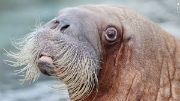

The walrus has played a prominent role in the cultures of many
indigenous Arctic peoples, who have hunted the walrus for its meat,
fat, skin, tusks, and bone. Click here so see what climate change is doing to the Walruses.

During the 19th century and the early 20th century,
walruses were widely hunted and killed for their blubber, walrus ivory, and meat.
The population of walruses dropped rapidly all around the Arctic region. Click here
to see our friend again!